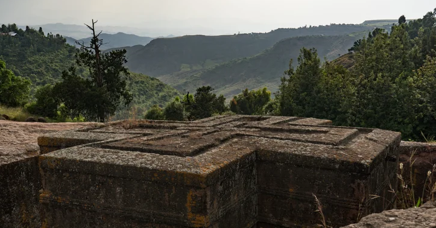

Henok Markos
```About Me
My name is Henok Markos. I am from Ethiopia. I am a software development student at BYU-Pathway. I enjoy learning programming, web development, and new technologies. My goal is to become a skilled software developer and use technology to solve problems.
Ethiopia

Ethiopia is my home country, located in East Africa. It is known for its rich history, beautiful landscapes, diverse cultures, and ancient traditions. I am proud of my country and its heritage.